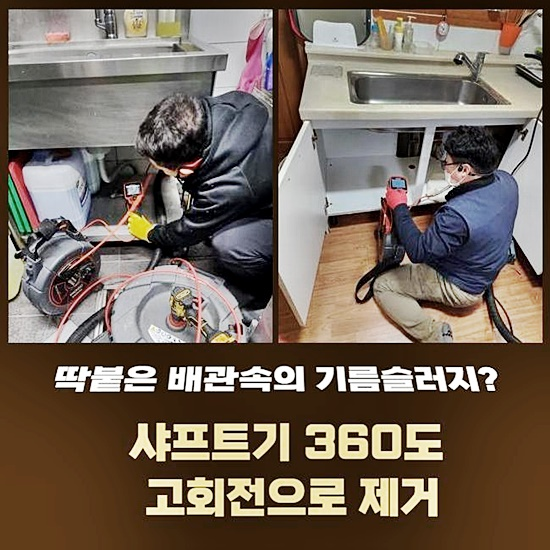
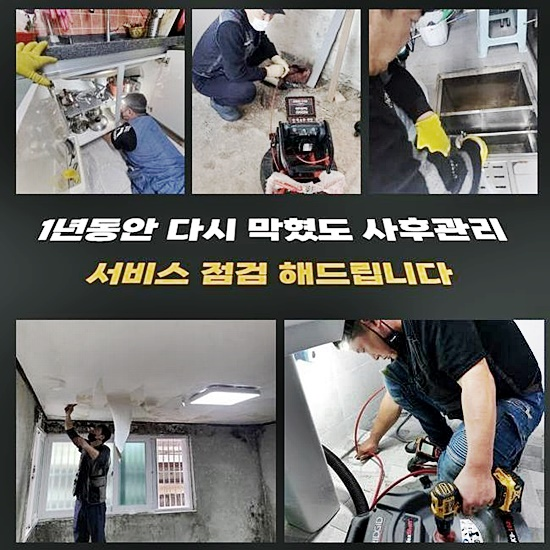
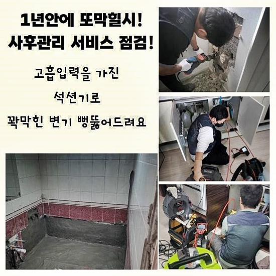
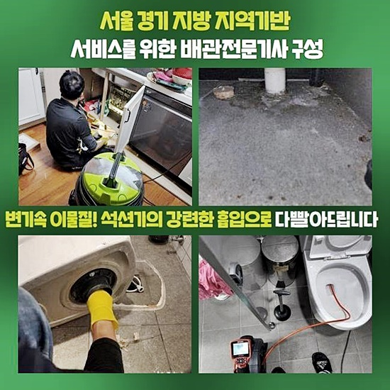
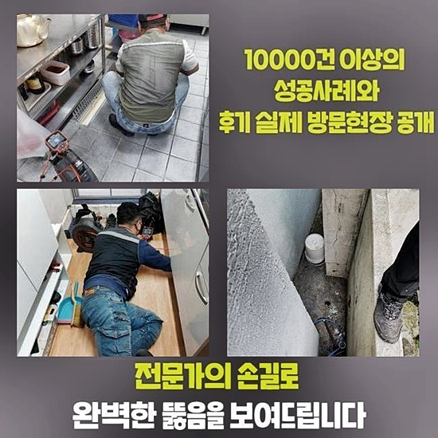
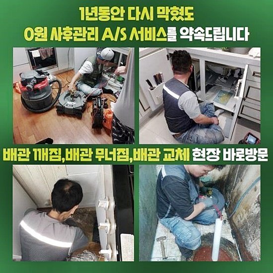

🏠 재궁동변기뚫음 광정동 오수맨홀청소 설비하는곳
용인 변기막힘 전문 시공 후기

📋 작업 개요
- 위치: 용인
- 서비스 유형: 변기막힘, 하수구막힘, 배관막힘, 맨홀막힘, 역류해결, 뚫는업체, 배관청소, 고압세척, 설비공사, 배관보수, 악취차단
- 작업 일시: 2024. 8. 21. 18:13
- 업체명: 하수구수사대 (010-5615-2118)
🔍 문제 상황
재궁동변기뚫음 광정동 오수맨홀청소 설비하는곳
배수관의 경우에는 오랫동안 기능을 수행하다보면 데미지를 입기때문에 많은 트러블들을 촉발시키게 됩니다
신규 배관이 아니라면 물 속의 오염원이 자리하여 물길을 차단해 버리고 수준이 점점 더 심하게 이물들이 쌓여버려서 작은 틈도 없는 절대적인 막힘이 일어나고 마는 것이죠
보편적인 이물질의 속성은 기름진 슬러지나 머리카락 음식 찌꺼기가 있을 수 있는데 오랜기간 동안 쌓인다면 단단하게 뭉쳐버리게 되니 파이프를 완전하게 차단해 버리게 됩니다
예전에 지어진 건물이라면 일정 기점마다 수행하는 유지보수에 대한 노력이 필요하며 하수구가 막히는 것을 예방해 주는 방향이 핵심이라 할 수 있어요
막힘의 초기 수준에서 오류를 발견하고 얼른 뚫어주는 것이 복잡한 일을 만들지 않는데에 중책을 담당하게 됩니다
구조물이나 시설에 끼치는 피해가 조금이라도 축소될 수 있게 시간 간격에 맞게 검사를 들어가야 하는 상황이라면 적합한 수단을 접목하는 것이 열쇠입니다
상황을 전화로 전해들으니 건물에 머무르고 있는 많은 호실에 대한 손해가 한창 활성화가 되고 있어서 위급성이 있었습니다
지난 주에 다른 업체에서 내방을 한 전적이 있지만 원인을 감도 못 잡았다는 사실을 인식하고 보니 쾌적한 시스템으로 회복시키는 작업을 손보려면 한참 걸릴 것이라고 판단하여 만반의 준비를 했네요
재시공에 들어가는 곳인만큼 더욱 열정적으로 문제를 풀어드리는 게 필요했어요
각각 여러 기능을 보유하고 있는 도구들을 안전히 운반하여 빠른 속도로 현장으로 향하게 됐어요

🔎 원인 분석
💡 전문가 진단: 정밀 진단 장비를 사용하여 슬러지의 고착 여부를 판명하고 타격/세척 작업을 실시했습니다.
전화주신분이 간절한 모습을 마주해보니 사태의 심각도를 대강 알게 됐어요
진단 및 뚫음 업무에 착수하기에 앞서 어떠한 매커니즘으로 작업이 나아가게 되는건지 브리핑을 해드리면서 불안해 하시지 않게 분위기를 풀었어요
하수구를 개방하기 위하여 반복적으로 청소를 해가면서 조금씩 수로가 확보되는 현황을 지속적으로 봐줍니다
마치 새로 갈아준 것처럼 화사하고 밝은 파이프에 사용했던 생활용수가 시원스럽게 빠져나가는 것을 성과로 상정을 해두고 성실한 작업을 시작합니다
배관 속의 이물질들을 차분하게 청소하는 과정에서 막대한 수준의 노폐물이 과적되어 있을 때는 원만하게 처리되지 않는 측면도 없지 않았는데요
여러 성공사례가 있는 저희의 기술공들은 상황 판단능력과 장비를 운용해서 정확한 원인분석과 계획 수립으로 해당 문제점을 치료해 줍니다
제대로 된 원인을 알아내려면 배관의 종류나 특성에 대한 이해가 뒷받침을 해줘야만 성공할 수 있어요
만일 다른 원인을 찾는다면 다시 같은 일이 발생할 수 있고 시원시원한 배수 기능을 복구하기는 어려움이 따를 겁니다
현장마다 근본적인 이유와 상황의 나쁜 정도가 차이점이 있고 막힘을 만든 원인의 깊이에 따라서 아예 기계가 달라질 수 있어요
실패하고 돌아간 지난 업체도 변기 시설물만 대충 살피고 더 안쪽의 오수관까지는 점검을 들어가지 않았다며 작업 내역을 밝혀주셨어요
헛물만 켜고 돌아가 버려서 처리안되면 어쩌지 노심초사하셨을 고객님의 고충을 알기에 스피드한 퍼포먼스를 내는 고압세척을 했어요
오염원과 티슈 등 오염물질을 한순간에 없애고자 고압세척을 걸어줬는데 내부의 물티슈가 주된 원인이라고 감지됐어요

🔧 작업 과정
하나하나 덜어내는 수작업이 들어가야 하므로 시간은 꽤나 걸렸지만 잔여하는 휴지 한 장도 없게 실시간 현황을 보며 작업했네요
물티슈는 수용성으로 분해되지 않으니 변기를 쓸 때는 주의하며 물티슈 대신 일반 휴지를 쓰라는 것을 신신당부했습니다
집안에 있는 화장실을 전혀 전면 중단당한 끔찍한 상황을 장기간 직면하셨기 때문에 얼른 정상화를 시켜드리는 게 무엇보다 중요했죠!
주변부를 관찰해 봤더니 하수관이 불통하는 바람에 역류 현상까지 빚어진 좋지 못한 상태였어요
초반에 가볍게 뚫는다면 쉽게 달성될 수 있겠지만 장기간 지속되어 왔다면 여러 어려운 사건들을 동반하여 야기시키게 되므로 빨리 수습하는 게 최고에요
사실 척보면 척이라서 속성이 눈에 선하게 보이긴 하지만 보다 구체화를 시키기 위해서 오수관의 문제점을 연구해 보았습니다
하수구 뚜껑을 여니까 꼬릿한 하수구냄새가 치고올라왔고 커다란 규모로 확장된 이물질로 인해 하수관의 내부가 빈틈 없이 들어차 있어서 물이 배출되지 못하고 있었네요
썩은 듯한 냄새는 거주자 분들에게 인상 찌푸리는 불쾌감을 선사하고 천장과 바닥 전체적으로 깊이 스며들게 됩니다
하수구 안이 막혀버리는 부분들로 인해서 집안이 오염된다면 세균으로 인한 감염까지도 발현될지도 모르는 문제의 씨앗이 될 수 있어요
욕실 공간의 경우에는 시설물과 몸이 맞닿는 상황들이 다수이기 때문에 위생 관리를 투철히 해야하는 지역이라는 점을 알려드리고 싶습니다
사용했던 하수가 굼벵이처럼 배출되거나 고이는 모습이 구축된다면 조속히 전문적인 업체에 서비스를 부탁하셔야 합니다
엄청난 구옥인데다 다수의 세대가 모여사는 건물일 경우라면 더 취약해서 자주 하수구가 신통치않은 사건이 탄생하기 마련입니다
하수구의 이상증세가 발생하고 미루지 않고 처리할 수 있지만 더 빠른 시점에 디테일한 정기적인 세척을 통해서 과한 막힘을 방어하는 것이 좋을 겁니다
시공비용도 경감되는데다가 많은 세대까지 곤란함을 겪을 이유는 없으니까요
셀프로 개선을 하려고 무리하게 집착하는 것은 불건강한 배관을 추가적으로 다치게 만들 수 있습니다
파이프가 연식이 꽤 됐다면 약간의 실수 만으로도 파동으로 인해 데미지를 입을 위험이 도사리고 있습니다
따라서 하수관에 대한 전문진에게 의뢰하여 뭐때문인지 추론해 보고 알맞은 수단을 접목하는 것이 성공 확률이 높습니다
배관용 내시경을 쓰게 되면 배수로의 심부까지도 감지할 수 있고 오염원의 종류라거나 크기를 정확도 높게 도출해 낼 수 있어요
생활용수가 이동하게 되는 경로를 따라서 점진적으로 배관을 집중 검사해 보았더니 노폐물들이 기다란 형상을 한 채 벽체에 달라붙어 있었어요


✅ 작업 완료
넓은 구역에 이물질이 분포한 현황이라 분석되면 고압세척기를 이용해서 배관 전체를 세정을 하는 편이 좋습니다
오염원을 하나하나 스케일링하는 것이 아니라 강한 물대포를 통해 하수구를 단번에 씻어버리는 원리입니다
실시간으로 내부 컨디션을 계속 체크업을 해주면서 고압세척기의 세기와 적절한 방향 조정을 필히 거쳐줘야 합니다
뚫어뻥같은 기계를 쓰는 것은 수박 겉핥기 식의 대응일 뿐이지 근본적인 조정 방안은 아닌겁니다
전문 장비들을 통한 진단을 시행해야만 만족도가 높은 변화를 맞이할 수 있다는 것을 필히 기억해주시고 문제가 수면 위로 드러난다면 지체 없이 전화를 주시면 끝납니다



⚠️ 하수구 배관 막힘 예방 및 관리 가이드
- ✅ 머리카락, 비닐, 물티슈 등 물에 분해되지 않는 이물질은 하수구 유입을 절대 금지해 주세요.
- ✅ 하수구 거름망을 씌우고 모여진 이물질은 주기적으로 쓰레기통에 바로 비워주셔야 합니다.
- ✅ 배관 노후가 심할 경우 이물질이 더 쉽게 걸리므로 주기적인 배관 세척(고압세척 등)을 권장합니다.
- ✅ 작업 후 1년 이내 재발 시 하수구수사대에서 무상 A/S 보증 서비스를 제공합니다.
💡 핵심 정리
- 확실한 장비 작업(내시경 점검 및 샤프트 스케일링)으로 원인을 뿌리 뽑습니다.
- 작업 후 1년 이내에 동일한 부위 재발 시 100% 무상 A/S 서비스를 보장합니다.
- 서울 · 경기 · 인천 전 지역에 24시간 언제든 긴급 출동할 수 있도록 항시 대기 중입니다.
❓ 자주 묻는 질문 (FAQ)
🚨 용인 변기막힘 문제로 고민이신가요?
정확한 원인 진단과 확실한 시공으로 재발 없는 해결을 약속드립니다.
24시간 긴급 출동 | 서울 · 경기 · 인천 전지역 | 1년 내 재발 시 무상 A/S